Uncertainty¶
This notebook examines uncertainty in Atomica, going through
How uncertainty in model inputs is entered
How to perform simulations that are sampled from the distribution of parameters with uncertainty
How to perform analyses that incorporate uncertainty
Specifying uncertainty¶
Fundmentally, uncertainty enters Atomica via the data entry spreadsheets. Both the databook and program book have columns that can be used to enter uncertainty.
In the databook, uncertainty can be added to any TDVE table - that is, any of the sub-tables within the databook for each quantity. By default, those columns are not produced when the databook is written e.g. with
proj.data.save('databook.xlsx')
If you want to include those columns, use the write_uncertainty options:
proj.data.save('databook.xlsx',write_uncertainty=True)
This will add an ‘uncertainty’ column to all tables in the databook. If you only want to add uncertainty to a small number of quantities, you can simply insert an extra column for the tables that you want to add uncertainty to, by selecting the other cells and moving them over. The example below shows how an uncertainty column has been added to the ‘Screened people’ table and not to the ‘All people with condition’ table:
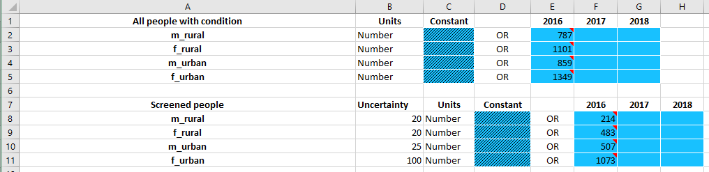
Uncertainty should be entered as a standard deviation, with the same units as the quantity itself
In the example above, it would be accurate to state that the 2016 value for the number of screened people in the male rural population is \(214 \pm 20\). Mathematically, the entry above corresponds to specifying that the distribution of screened people in the male rural population has a mean of 214 and a standard deviation of 20.
For the program book, uncertainty appears in two places - in the spending/coverage sheet, and in the outcome sheet, as shown below. These columns are always present in the program book.
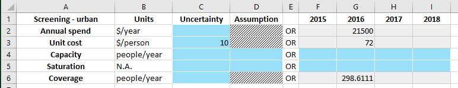
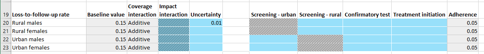
To limit complexity in data entry, only a single uncertainty value can be entered for each quantity. That is, in the databook and spending/coverage sheet, uncertainty cannot vary over time, and in the outcome sheet, the uncertainty is specified at the parameter-population level, and applies to all programs reaching that parameter.
Sampling inputs¶
We have seen above how to enter uncertainty in the databook and program book. These uncertainties are loaded into the corresponding ProjectData and ProgramSet objects in Atomica.
[1]:
%load_ext autoreload
%autoreload 2
%matplotlib inline
import sys
sys.path.append('..')
[2]:
import atomica as at
import numpy as np
import matplotlib.pyplot as plt
from scipy import stats
import sciris as sc
np.random.seed(3)
testdir = '../../tests/'
P = at.Project(framework=testdir + 'test_uncertainty_framework.xlsx', databook=testdir + 'test_uncertainty_databook.xlsx')
P.load_progbook(testdir + 'test_uncertainty_high_progbook.xlsx')
low_uncertainty_progset = at.ProgramSet.from_spreadsheet(testdir + 'test_uncertainty_low_progbook.xlsx',project=P)
high_uncertainty_progset = at.ProgramSet.from_spreadsheet(testdir + 'test_uncertainty_high_progbook.xlsx',project=P)
default_budget = at.ProgramInstructions(start_year=2018, alloc=P.progsets[0])
doubled_budget = default_budget.scale_alloc(2)
Atomica 1.15.0 (2019-08-01) -- (c) the Atomica development team
git branch: Git branch N/A (Git hash)
2019-10-15 06:07:17.887100
Elapsed time for running "default": 0.0368s
Above, we have loaded in a databook with uncertainty values, and also loaded in two different program books, one with low uncertainty, and one with high uncertainty. We can inspect the objects to see how the uncertainty entered in the spreadsheets is reflected in code.
[3]:
P.data.tdve['all_screened'].ts[0]
[3]:
<atomica.utils.TimeSeries at 0x7fdb2768a9d0>
============================================================
Methods:
copy() interpolate() remove_between()
get() remove() sample()
get_arrays() remove_after() insert()
remove_before()
============================================================
_sampled: False
assumption: None
sigma: 20.0
t: [2016.0]
units: Number
vals: [214.0]
============================================================
The uncertainty value is attached to the underlying TimeSeries objects, and stored in the sigma property. When running a simulation, we specify a ParameterSet and optionally a ProgramSet:
[4]:
parset = P.parsets[0]
res = P.run_sim(parset)
d = at.PlotData(res,'all_screened',pops='m_rural')
at.plot_series(d);
Elapsed time for running "default": 0.0343s
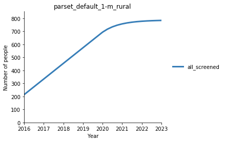
If there is uncertainty, we can obtain a sampled epidemiological prediction by sampling from all of the quantities containing uncertinty. For example, replacing the value of 214 above with a sample from the distribution \(\ \mathcal{N}(214,20)\) - along with all of the other quantities. The input to the model is effectively a parameter set derived from the original set of parameters, but with values replaced by sampled values where appropriate. You can obtain a sampled parameter set
simply by calling the ParameterSet.sample() method:
[5]:
sampled_parset = parset.sample()
Now compare the values for the screening parameter in the original parset and the sampled parset:
[6]:
print('Original parameters: %.2f' % (parset.pars['all_screened'].ts['m_rural'].vals[0]))
print('Sampled parameters: %.2f' % (sampled_parset.pars['all_screened'].ts['m_rural'].vals[0]))
Original parameters: 214.00
Sampled parameters: 249.77
The original parameters contain the values entered in the databook, while the sampled parameters have the values perturbed by the sampling. Although the sampled parameters retain the original uncertainty values, you can only perform sampling once:
[7]:
try:
sampled_parset.sample()
except Exception as e:
print(e)
Sampling has already been performed - can only sample once
To run a sampled simulation, it is thus only necessary to pass the sampled ParameterSet into Project.run_sim instead of the original parameters:
[8]:
sampled_res = P.run_sim(sampled_parset,result_name='Sampled')
d = at.PlotData([res,sampled_res],'all_screened',pops='m_rural')
at.plot_series(d,axis='results');
Elapsed time for running "default": 0.0370s
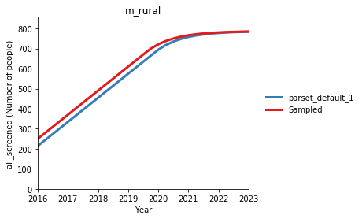
Exactly the same procedure is used for programs - the ProgramSet has a sample() method which returns a sampled ProgramSet that can be used instead of the original ProgramSet to perform a sampled simulation:
[9]:
sampled_progset = high_uncertainty_progset.sample()
res = P.run_sim(parset,high_uncertainty_progset,progset_instructions=default_budget,result_name='Original')
sampled_res = P.run_sim(parset,sampled_progset,progset_instructions=default_budget,result_name='Sampled')
d = at.PlotData([res,sampled_res],'all_screened',pops='m_rural')
at.plot_series(d,axis='results');
Elapsed time for running "default": 0.0485s
Elapsed time for running "default": 0.0469s
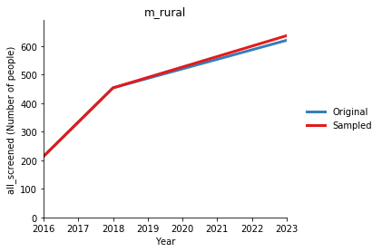
Of course, we can combine the sampled parset and the sampled progset in a single simulation to sample from both sources of uncertainty simultaneously:
[10]:
sampled_res = P.run_sim(sampled_parset,sampled_progset,progset_instructions=default_budget,result_name='Sampled')
d = at.PlotData([res,sampled_res],'all_screened',pops='m_rural')
at.plot_series(d,axis='results');
Elapsed time for running "default": 0.0479s
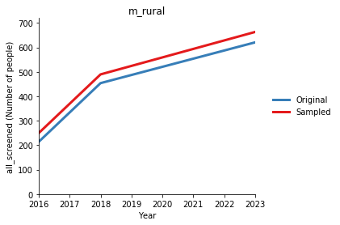
One issue when sampling is that of satisfying initial conditions. Databooks often require some work to ensure that none of the initial compartment sizes are negative. If uncertainties are specified for characteristics that are used for initialization, it is possible that the independently-sampled characteristic values yield a bad initialization (where some of the compartment sizes are negative, or the characteristic values are otherwise inconsistent). If this happens, a BadInitialization
error is raised. Therefore, to write reliable sampling code, it is essential to catch this exception:
[11]:
np.random.seed(1) # This seed provides a BadInitialization at the next iteration
sampled_parset = parset.sample()
try:
sampled_res = P.run_sim(sampled_parset)
except at.BadInitialization as e:
print(e)
Negative initial popsizes:
Compartment f_rural scr - Calculated -11.235128
Characteristic 'all_people': Target value = [1101.]
Compartment undx: Computed value = 630.235128
Compartment scr: Computed value = -11.235128
Compartment dx: Computed value = 100.000000
Compartment tx: Computed value = 234.000000
Compartment con: Computed value = 148.000000
Characteristic 'all_screened': Target value = [470.76487173]
Compartment scr: Computed value = -11.235128
Compartment dx: Computed value = 100.000000
Compartment tx: Computed value = 234.000000
Compartment con: Computed value = 148.000000
When this error occurs, the correct thing to do is usually to just sample again on the assumption that other samples may satisfy the initial conditions. Thus, sampling would be carried out within a while loop that continues until a simulation is successfully run. To automate this, we can use Project.run_sampled_sims which functions similarly to Project.run_sim() except that it incorporates a sampling step together with automated resampling if the initial conditions are unsatisfactory
[12]:
sampled_res = P.run_sampled_sims(parset)
print(sampled_res)
[[<atomica.results.Result at 0x7fdb24b6ce10>
============================================================
Methods:
charac_names() get_alloc() par_names()
comp_names() get_coverage() plot()
copy() get_variable() export_raw()
link_names()
============================================================
created: datetime.datetime(2019, 10, 15, 6, 7, 20, 982430)
gitinfo: {'branch': 'Git branch N/A', 'hash': 'Git hash N/A',
'date': 'Git dat [...]
model: <atomica.model.Model object at 0x7fdb24b6cf50>
modified: datetime.datetime(2019, 10, 15, 6, 7, 20, 982451)
name: default
parset_name: default
pop_names: ['m_rural', 'f_rural', 'm_urban', 'f_urban']
uid: UUID('289f9e4c-9d08-4198-ae34-587c766594ca')
version: 1.15.0
============================================================
]]
Note that the return value is a list of results, rather than just a Result like with Project.run_sim(). Typically, uncertainties require working with multiple samples. Thus, you can also pass in a number of samples, and Project.run_sampled_sims() will return the required number of sampled results:
[13]:
sampled_res = P.run_sampled_sims(parset,n_samples=5)
print(len(sampled_res))
100%|██████████| 5/5 [00:00<00:00, 20.30it/s]
5
When running multiple sampled simulations, a progress bar with estimated time remaining will be displayed.
Analysis¶
Now that we are able to run simulations with sampled parameters, the next question is how to produce analysis outputs such as plots that have error bars or otherwise visually represent uncertainty. The first step to doing this is to obtain a collection of results. The number of samples required loosely depends on the number of quantities with uncertainty - a general rule of thumb though is that the number of samples required would generally be on the order of 50-200.
[14]:
sampled_res = P.run_sampled_sims(parset,n_samples=100)
100%|██████████| 100/100 [00:05<00:00, 16.78it/s]
For comparison, we will also run a ‘baseline’ simulation with no sampling. A plot of the baseline results looks like this:
[15]:
baseline = P.run_sim(parset)
d = at.PlotData(baseline,outputs=['screen','diag','initiate'],pops='m_rural')
at.plot_series(d);
Elapsed time for running "default": 0.0365s
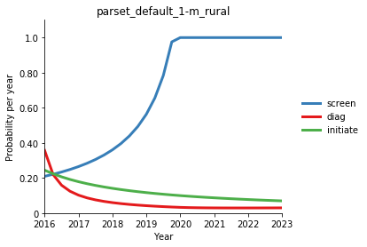
Basic plotting¶
The normal sequence for plotting is that we would
Instantiate a
PlotDataobject with the quantities to plot. Effectively, this operation is mapping aResultto aPlotDataCall a plotting library function to generate the plot
Plots generated with the plotting library compare multiple results (e.g. different scenarios) rather than showing uncertainty computed over an ensemble of results. Further, they only take in a single PlotData instance where the results to compare have been included in the same PlotData object.
To work with uncertainty, instead of plotting a single PlotData object, we instead plot a collection of PlotData objects. And plots are generated using a different set of plotting functions that take in multiple PlotData instances and use them to compute and display uncertainties (e.g. as error bars or as shaded areas).
This functionality is accessed via the Ensemble class. The Ensemble class is designed to store and plot ensembles of results. Internally, it stores a list of PlotData objects - one for each sample. It also contains a ‘mapping function’ that takes in results and returns a PlotData instance. To use an Ensemble, first we need to define a mapping function. In the simplest case, this looks just like a normal call to PlotData():
[16]:
mapping_function = lambda x: at.PlotData(x,outputs=['screen','diag','initiate'],pops='m_rural')
Then, we create an Ensemble:
[17]:
ensemble = at.Ensemble(mapping_function=mapping_function)
We then need to load all of the results into the mapping function. Similar to Python’s built-in set class, there are two ways of inserting the results
One by one, using
Ensemble.add(result)All at once, using
Ensemble.update(list_of_results)
In our case, we already have a list of results generated by P.run_sampled_sims, so we can go ahead and use Ensemble.update() to insert them
[18]:
ensemble.update(sampled_res)
Finally, we can make some plots. To start with, let’s make a plot of the time series like the one shown above for the baseline results, but with uncertainty this time:
[19]:
ensemble.plot_series();
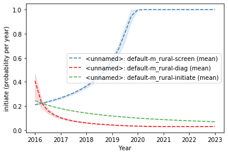
As we have only loaded in the sampled results, the dashed line corresponds to the median of the samples. The shaded areas show the area between the first and third quartiles for the samples. To start with, instead of showing the median of the samples, it is generally more appropriate to show the actual baseline results. To do this, we can load the baseline results into the Ensemble and then regenerate the plot.
The baseline results need to have the same names as the sampled results. If you do not explicitly specify names, Project.run_sampled_sims produces default names that avoid collisions between multiple instructions. However, Project.run_sim produces default names that avoid collisions with other results stored in the project. Therefore, it may be necessary to explicitly set or change the result names if the names were set differently.
In this case, the baseline results need to have their name changed to 'default' to match the sampled results:
[20]:
baseline.name = 'default'
ensemble.set_baseline(baseline)
ensemble.plot_series();
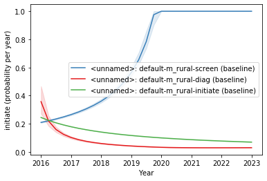
As with the rest of the plotting library, the legend is ‘maximally informative’ in that it contains as much information as possible. This is because the most appropriate labelling for the figure (whether the axis labels, titles, or legend entries) varies greatly with context, and it is often necessary to relabel the figure on a plot-by-plot basis. This relabelling is facilitating by having all of the necessary content on the figure, rather than having to keep track of it separately. Thus, it is expected that the labels may need to be edited afterwards depending on usage.
The '<unnamed'> string corresponds to the name of the ensemble. We hadn’t given the ensemble a name, but naming the ensemble can be useful if you want to superimpose multiple ensembles on the same plot. The ensemble can be named at construction, or at any point subsequently:
[21]:
ensemble.name = 'Example'
ensemble.plot_series();
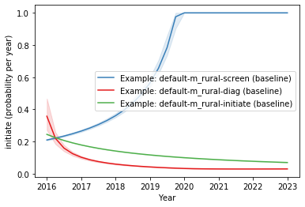
Now, the baseline results are displayed as solid lines. Other types of plots can be generated too.
[22]:
ensemble.plot_bars(years=2018)
[22]:
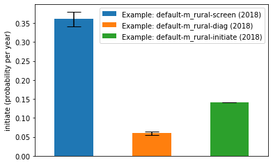

Because the Ensemble stores PlotData objects, you can perform any aggregation operations in the same way as normal. For example, we can plot the years lost to disability by integrating the number of people in the disease compartments.
[23]:
yld = lambda x: at.PlotData(x,outputs={'disease':['undx','scr','dx','tx']},t_bins=[2018,2023],time_aggregation='integrate')
This is the usual way that this plot would be generated for a single Result without uncertainty, and indeed we can go ahead and generate that plot now
[24]:
d = yld(baseline)
at.plot_bars(d);
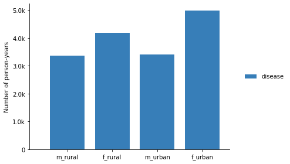
With uncertainty, we simply make the plot via an Ensemble instead
[25]:
ensemble = at.Ensemble(name='Example',mapping_function=yld,baseline_results=baseline)
ensemble.update(sampled_res)
ensemble.plot_bars()
[25]:
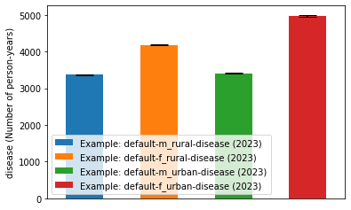

You can also use the Ensemble.summary_statistics() method to get a dataframe with summary statistics
[26]:
ensemble.summary_statistics()
[26]:
| value | |||||
|---|---|---|---|---|---|
| year | result | output | pop | quantity | |
| NaN | default | disease | m_rural | baseline | 3366.594472 |
| mean | 3366.261632 | ||||
| median | 3365.778345 | ||||
| max | 3388.291508 | ||||
| min | 3350.692511 | ||||
| Q1 | 3360.907660 | ||||
| Q3 | 3370.853660 | ||||
| f_rural | baseline | 4183.379175 | |||
| mean | 4182.609299 | ||||
| median | 4181.635962 | ||||
| max | 4228.480503 | ||||
| min | 4137.139551 | ||||
| Q1 | 4173.438393 | ||||
| Q3 | 4194.230398 | ||||
| m_urban | baseline | 3402.226801 | |||
| mean | 3402.928054 | ||||
| median | 3403.553929 | ||||
| max | 3426.910567 | ||||
| min | 3375.834308 | ||||
| Q1 | 3397.346195 | ||||
| Q3 | 3410.822920 | ||||
| f_urban | baseline | 4979.381653 | |||
| mean | 4979.400349 | ||||
| median | 4977.238172 | ||||
| max | 5029.776727 | ||||
| min | 4917.878037 | ||||
| Q1 | 4964.519258 | ||||
| Q3 | 4994.814020 |
Comparing sampled results¶
Moving up in complexity, a common analysis task is comparing results across scenarios. At the beginning, we instantiated two sets of instructions - one with default spending, and one with doubled spending. We will now produce samples from both of these instructions. There are two ways to approach this problem
Storing the results in separate Ensembles
Putting multiple results into a single Ensemble
To perform the analysis most validly, it is important to run the budget scenario in each of the instructions for the same parset and progset samples. That is, to generate a single result, it is necessary to first sample, and then use the same samples for all instructions. Written out explicitly, this would be
[27]:
np.random.seed(3)
sampled_parset = parset.sample()
sampled_progset = high_uncertainty_progset.sample()
result_default_spend = P.run_sim(sampled_parset,sampled_progset,default_budget,result_name='Baseline')
result_doubled_spend = P.run_sim(sampled_parset,sampled_progset,doubled_budget,result_name='Doubled budget')
Elapsed time for running "default": 0.0459s
Elapsed time for running "default": 0.0482s
Comparing results across budget scenarios is extremely common, so Atomica has built-in functionality to facilitate this. You can pass multiple instructions and result names to Project.run_sampled_sims() to generate results as shown above
[28]:
sampled_res = P.run_sampled_sims(parset,high_uncertainty_progset,n_samples=100,progset_instructions=[default_budget,doubled_budget],result_names=['Baseline','Doubled budget'])
print(len(sampled_res))
100%|██████████| 100/100 [00:13<00:00, 7.46it/s]
100
The output is now a list of lists, where the inner list contains a set of results that has been generated with different instructions but the same sampled inputs. This is the input that would go to an Ensemble mapping function, to produce a PlotData instance that mixes results. Now, we can generate a plot comparing YLD in each population
[29]:
sampled_res = P.run_sampled_sims(parset,high_uncertainty_progset,progset_instructions=[default_budget,doubled_budget],n_samples=100,result_names=['Baseline','Doubled budget'])
100%|██████████| 100/100 [00:12<00:00, 7.77it/s]
[30]:
mapping_function = lambda x: at.PlotData(x,outputs=['screen','diag','initiate'],pops='m_rural')
ensemble = at.Ensemble(name='Example',mapping_function=mapping_function)
ensemble.update(sampled_res)
ensemble.plot_series();
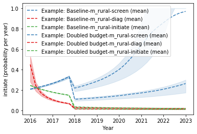
[31]:
ensemble = at.Ensemble(name='Example',mapping_function=yld)
ensemble.update(sampled_res)
ensemble.plot_bars();
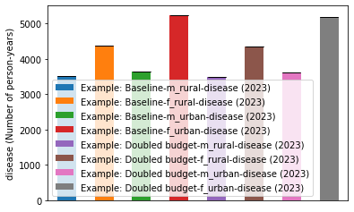
To aid comparison, it may be clearer to plot individual populations at a time. For example:
[32]:
ensemble.plot_bars(pops='m_urban');
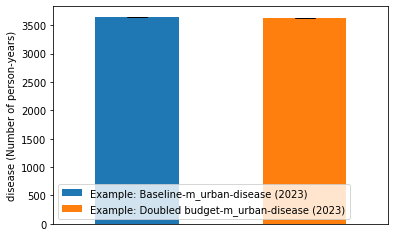
In this case, there isn’t much difference because as shown in the time series, most of the variability is encountered in the initial simulation years. We can see this if we plot a quantity with more variability - for example, the number of undiagnosed people in the first simulation year
[33]:
undx = lambda x: at.PlotData(x,outputs='undx',pops='m_urban')
ensemble = at.Ensemble(name='Example',mapping_function=undx)
ensemble.update(sampled_res)
ensemble.plot_bars(years=2017);
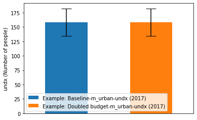
If you pass in a figure to Ensemble.plot_bars(), it will attempt to append new bars into the existing figure. For example:
[34]:
fig = ensemble.plot_bars(years=2017);
ensemble.plot_bars(years=2018,fig=fig);
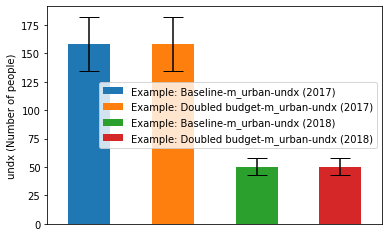
In this case, it was not essential to do this because multiple years can be plotted in a single plot_bars call. However, you could superimpose bars from entirely separate Ensemble objects, if you wanted to compare quantities computed using different mapping functions.
Another important type of plot is the sampled distribution of a quantity. Effectively, the entire Atomica model is a function that maps probabilitity distributions for model inputs into distributions of model outputs. These distributions can be plotted directly. For example:
[35]:
ensemble.plot_distribution(pops='m_urban');
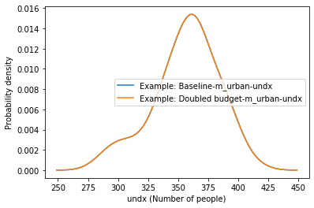
The distributions that are plotted are effectively vertical cross-sections of the time series plots. They can be important to inspect to check for multi-modal distributions, or asymmetric distributions, which have implications for the validity of reporting summary statistics.
There are two ways to compare distributions
Within an Ensemble
Comparing multiple outputs/pops
Comparing multiple results
Across Ensembles
Typically would be comparing corresponding outputs/pops
To cater for the former, if a PlotData instance contains multiple years, results, outputs, or pops, they will all be shown on the distribution figure unless filtered using arguments to Ensemble.plot_distribution. For the latter, subsequent calls to Ensemble.plot_distribution can pass in a Figure, which will superimpose the distributions onto the existing figure. For example:
[36]:
ensemble = at.Ensemble(lambda x: at.PlotData(x)) # All compartments
ensemble.update(sampled_res)
ensemble.plot_distribution(pops='m_rural',outputs='undx');
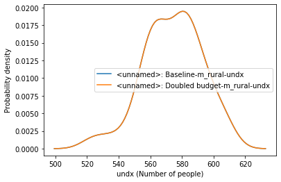
Distributions of differences between results¶
One of the most important analyses is quantifying the difference between one budget scenario and another - for example, the improvement from optimizing the budget. In the presence of uncertainty, this difference becomes a distribution. However, samples from this distribution must be computed pairwise - from the same sampled inputs, test both budgets, compute the difference between them, and then store the difference. This can be computed by defining a mapping function that return a PlotData
containing differences rather than raw values. For example
[37]:
def get_differences(res):
d1 = at.PlotData(res[0],outputs={'disease':['undx','scr','dx','tx']},t_bins=[2018,2023],time_aggregation='integrate')
d2 = at.PlotData(res[1],outputs={'disease':['undx','scr','dx','tx']},t_bins=[2018,2023],time_aggregation='integrate')
return d2-d1
Note that the PlotData class implements operators for subtraction and division, to facilitate comparing derived/aggregated quantities. We can now create an Ensemble with this mapping function, add the results, and plot the distribution of differences:
[38]:
ensemble = at.Ensemble(get_differences,'difference')
ensemble.update(sampled_res)
ensemble.plot_distribution(pops='m_rural');
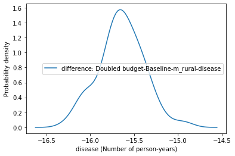
Cascade ensembles¶
Plotting uncertainty on cascades is a common task. However, the cascade plotting functions normally operate directly on Result objects, rather than PlotData which forms the basis of data storage in Ensembles. For normal analysis without uncertainty, this facilitates ease of use by not requiring an intermediate PlotData step when producing standard cascade plots. For uncertainty, the simplest option is to construct a PlotData object containing the required cascade values, and to
generate the plot via Ensemble.plot_bars (the key difference between Ensemble.plot_bars and plotting.plot_bars is that Ensemble.plot_bars doesn’t support any stacking - which would be potentially misleading with uncertainty - and therefore supports arbitrary ordering of the bars, whereas plotting.plot_bars requires that the inner group consist of outputs or pops only, as these are the only valid stacking targets).
To facilitate generation of the appropriate mapping function and arguments to Ensemble.plot_bars, this functionality is built into the CascadeEnsemble class, which inherits from Ensemble. The constructor for CascadeEnsemble takes in the name of the cascade to plot. It also requires a ProjectFramework to be passed in, which provides the definition of the cascade being requested:
[39]:
cascade_ensemble = at.CascadeEnsemble(P.framework, 'main')
Results can be loaded into the cascade ensemble as normal
[40]:
cascade_ensemble.update(sampled_res)
A cascade plot can then be plotted using CascadeEnsemble.plot_multi_cascade():
[41]:
cascade_ensemble.plot_multi_cascade(years=2018)
[41]:

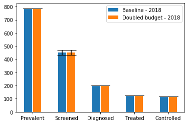
Notice how the bars are automatically grouped by cascade stage and labelled appropriately. It’s also possible to call standard plotting functions that are inherited from the Ensemble class. For example, we could plot the time series of cascade stages using Ensemble.plot_series:
[42]:
cascade_ensemble.plot_series(results='Baseline',pops='m_rural');
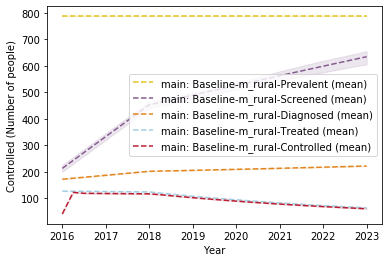
Virtual stages¶
Normal cascades must be formed from compartments and characteristics only, and these stages are automatically validated to ensure proper nesting. However, because CascadeEnsemble.plot_multi_cascade is based around PlotData it is possible to display a cascade-like plot where stages are defined using arbitary PlotData operations. That is, the CascadeEnsemble does not require that the cascade is actually valid. This opens up the possibility of generating cascade-like plots with
‘virtual stages’ that don’t actually otherwise exist. An example from an actual application is the introduction of a ‘Pre-diagnosed’ stage where application data has (separately) indicated that about 80% of screened individual would be in this pre-diagnosed stage. The cascade could be defined as:
[43]:
cascade = {
'Prevalent':'all_people',
'Screened':'all_screened',
'Pre-diagnosed':'0.8*all_screened',
'Diagnosed':'all_dx',
'Treated':'all_tx',
'Controlled':'all_con'
}
noting that the ‘pre-diagnosed’ stage is the result of a calculation and is thus not a compartment or characteristic at all. The cascade specification here is simply any output dict supported by PlotData. We can then create a CascadeEnsemble using this cascade, and plot it
[44]:
cascade_ensemble = at.CascadeEnsemble(P.framework, cascade)
cascade_ensemble.update(sampled_res)
fig = cascade_ensemble.plot_multi_cascade(years=2018)
fig.set_size_inches(8,4)
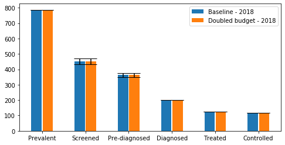
Notice that because the model outputs are converted to PlotData on a per-sample basis, uncertainty is automatically propagated to the derived quantity (i.e. ‘pre-diagnosed’ has uncertainty even though it was defined on the fly). This would be the case for any PlotData operation.
Memory-limited environments¶
A common issue that may occur when sampling large models is that there may be insufficient RAM to store all of the Result objects in memory prior to adding them to an Ensemble. The PlotData stored within an Ensemble is typically orders of magnitude smaller than the raw results - in the first instance, it only contains a small subset of the model outputs. A large model might have on the order of 150 parameters, 50 compartments, and 150 links. A typical Ensemble may have track
5-10 quantities, which represents a ~50x reduction in size. Further, the raw output has values at every timestep, which could be on the order of 100 values (e.g. a 25 year simulation with quarterly timesteps) but it may only be desired to compare simulations for a few time points - which could provide another ~20x reduction in size.
In sum, the strategy for dealing with this situation is
Define a mapping function that leads to a sufficient reduction in size of the outputs
Add results to the Ensemble as they are generated, rather than keeping them
For reducing the size of the mapping function, we have already seen examples of mapping functions that select only a subset of the outputs or populations. For time, an additional call to PlotData.interpolate() can be added to retain the values only at times of interest. For example:
[45]:
store_minimal = lambda x: at.PlotData(x,outputs=['screen','diag','initiate'],pops='m_rural').interpolate(2020)
ensemble = at.Ensemble(store_minimal)
Then, to perform the sampling, we simply have to generate results one at a time, rather than all at once
[46]:
for _ in range(100):
result = P.run_sampled_sims(parset,high_uncertainty_progset,default_budget,n_samples=1)
ensemble.add(result[0])
Now, the peak amount of memory required is only that of 1 simulation. We can then plot the ensemble as usual:
[47]:
ensemble.plot_bars();
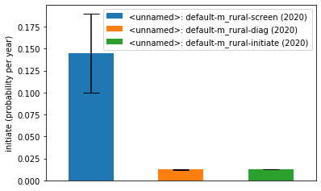
To perform this procedure seamlessly, instead of calling P.run_sampled_sims, you can instead call Ensemble.run_sims. The idea is that Ensemble.run_sims runs simulations specifically for that Ensemble - instead of returning results, it adds them to the Ensemble. Under the hood, it adds the results as they are generated without storing them internally.
[48]:
ensemble = at.Ensemble(store_minimal)
ensemble.run_sims(proj=P,parset=parset,progset=high_uncertainty_progset,progset_instructions=default_budget,n_samples=100)
ensemble.plot_bars();
100%|██████████| 100/100 [00:06<00:00, 14.37it/s]
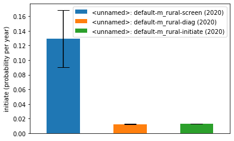
Note that if you use Ensemble.run_sims is that a baseline simulation without sampling will automatically be performed and stored in the Ensemble.
Use
P.run_sampled_simsif you can store all of the results in memory, which allows you to generate new Ensembles and plots without re-running the simulationsUse
Ensemble.run_simsif you don’t have enough memory to hold all of the results
Parallization¶
Sampling is a trivially parallizable problem, and Atomica supports parallization of sampling. To run samples in parallel, simply set parallel=True when calling Project.run_sampled_sims() or Ensemble.run_sims(). See test_ensemble_parallel.py in the tests folder for an executable example. Note that on Windows, the calling code must be wrapped in if __name__ == '__main__'.
Experimental plots¶
The plots below are not fully developed but serve as examples to show possibilities that can be built upon as applications of Atomica progress.
[49]:
ensemble.pairplot()
/home/vsts/work/1/s/atomica/results.py:1415: UserWarning: To output multiple subplots, the figure containing the passed axes is being cleared
pd.plotting.scatter_matrix(df, ax=ax, c=[colormap[x] for x in df['result'].values], diagonal='kde')
[49]:
[<Figure size 432x288 with 9 Axes>]
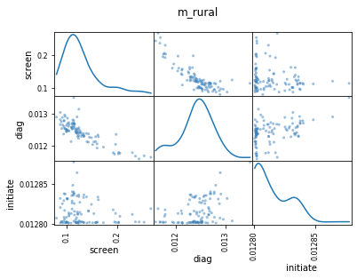
[50]:
ensemble.boxplot()
[50]:
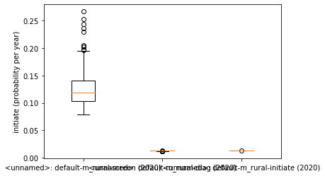